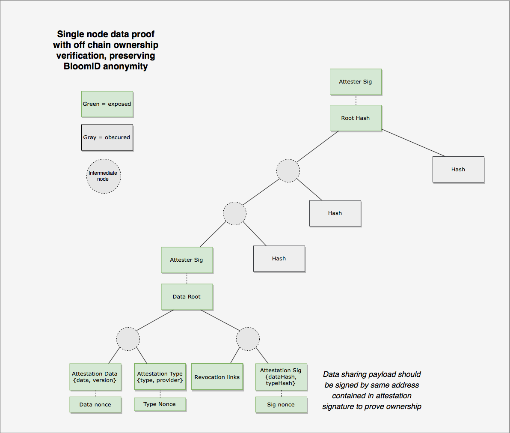
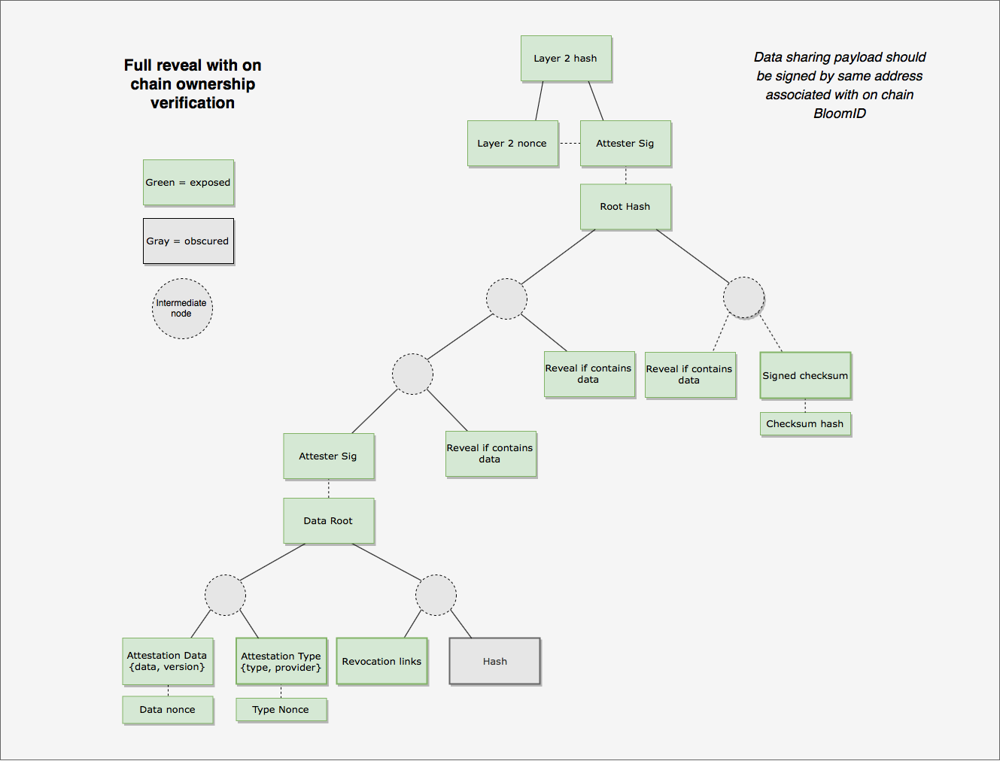
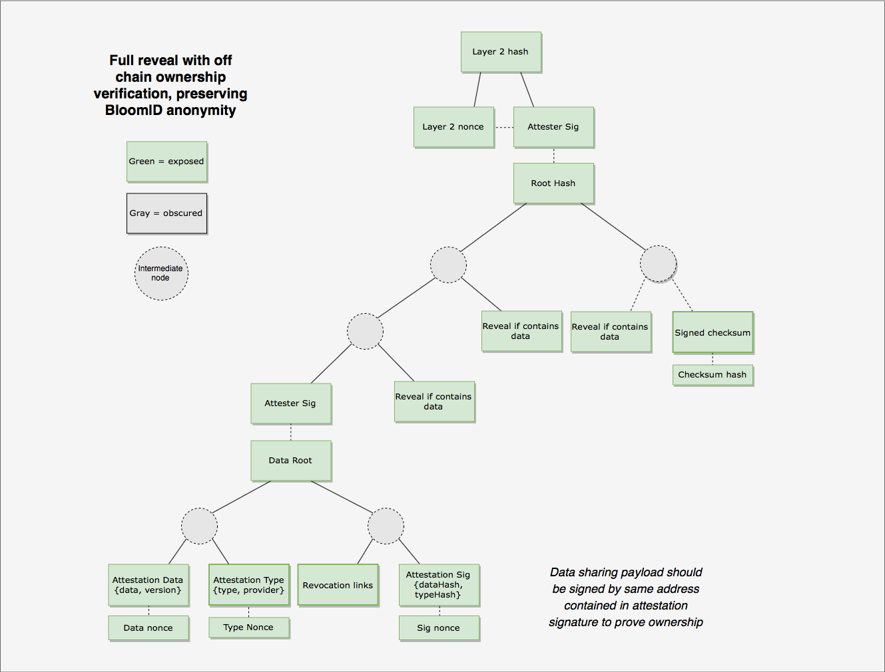

The data hash emitted in an attestation event is the root hash of a Merkle tree with a strictly defined structure.
The tree consists of three different types of leaves: data nodes, padding nodes and a checksum node. All nodes are sorted alphabetically by the hex string representation of the hash before constructing the tree.
The root of the tree is signed by the attester. The signature is hashed with a nonce. The resulting hash is emitted in the attestation event. The existence of the 2nd layer hash allows a user to share a Merkle proof of their verified data without revealing their BloomId. They do this by concealing the 2nd layer nonce which is hashed with the attester sig.
Code Snippets
https://github.com/hellobloom/attestations-lib/blob/master/src/HashingLogic.ts
Proving Ownership
Normally a recipient of this proof would challenge the sender to prove ownership of the data. They would do this by requesting the sender to sign a message using a private key associated with the BloomID referenced in the on chain attestation. By choosing not to reveal the 2nd layer nonce the sender can not prove they are the owner of the data using their BloomID.
Instead they can include a signed message using an auxiliary key pair which is not associated with their BloomID on chain. This signature is embedded in the data node. A recipient of the data can challenge the sender to sign a message using the auxiliary key to prove they are the subject of the attestation
Secondary identification info (traditional authentication methods like name/email/tel/SSN) can less optimally also be used.
Data Node
The data node contains the data and type information for an attestation. Each data node is structured as a Merkle tree with 4 leaves.
The attester signs the root hash of each data node so a user may prove this data node was verified without having to reveal the entire tree.

export interface IAttestationNode extends IAttestation {
data: IAttestationData
type: IAttestationType
/**
* aux either contains a hash of IAuxSig or just a padding node hash
*/
aux: string
link: IRevocationLinks
}
/**
*
* @param attestation Given the contents of an attestation node, return a
* Merkle tree
*/
export const getDataTree = (attestation: IAttestationNode): MerkleTree => {
const dataHash = hashMessage(orderedStringify(attestation.data))
const typeHash = hashMessage(orderedStringify(attestation.type))
const linkHash = hashMessage(orderedStringify(attestation.link))
const auxHash = hashMessage(attestation.aux)
return getMerkleTreeFromLeaves([dataHash, typeHash, linkHash, auxHash])
}
Padding Node
Each non-terminal node on the tree must have no missing children. This is so no information can be gathered about the number of revealed or hidden data nodes in the tree unless explicitly shared by the user.
The amount of padding nodes is defined as the number of terminal nodes at the given tree depth - the number of data nodes - 1. The depth of the tree starts at 5 and increases by 5 when all the terminal nodes are filled.
Therefore, when the number of data nodes is 15 or fewer, the height of the tree is 5. If there are greater than 15 data nodes, the height of the tree grows to 10 which allows for 511 terminal nodes containing data plus the checksum node.

/**
* Given the number of data nodes return an array of padding nodes
* @param {number} dataCount - number of data nodes in tree
*
* A Bloom Merkle tree will contain at minimum one data node and one checksum node
* In order to obscure the amount of data in the tree, the number of nodes are padded to
* a set threshold
*
* The Depth of the tree increments in steps of 5
* The number of terminal nodes in a filled binary tree is 2 ^ (n - 1) where n is the depth
*
* dataCount 1 -> 15: paddingCount: 14 -> 0 (remeber + 1 for checksum node)
* dataCount 16 -> 511: paddingCount 495 -> 0
* dataCount 512 -> ...: paddingCount 15871 -> ...
* ...
*/
export const getPadding = (dataCount: number): string[] => {
if (dataCount < 1) return []
let i = 5
while (dataCount + 1 > 2 ** (i - 1)) {
i += 5
}
const paddingCount = 2 ** (i - 1) - (dataCount + 1)
return Array.apply(null, Array(paddingCount)).map(
(item: number, index: number) => {
return hashMessage(crypto.randomBytes(20))
}
)
}
Checksum node
The padding nodes obfuscate the number of filled nodes. If a user wants to prove they have revealed all the data contained in an attestation they can reveal the checksum node. The checksum node contains a hash of the array of all the data node hashes.
The checksum node is optional so the user has deniability about what data they did not reveal, if they don't want to reveal all data in an attestation tree.

/**
* Given an array of root hashes, sort and hash them into a checksum buffer
* @param {string[]} dataHashes - array of dataHashes as hex strings
*/
export const getChecksum = (dataHashes: string[]): Buffer => {
return ethUtil.toBuffer(hashMessage(JSON.stringify(dataHashes.sort())))
}
/**
* Given an array of root hashes, get and sign the checksum
* @param dataHashes - array of dataHashes as hex strings
* @param privKey - private key of signer
*/
export const signChecksum = (dataHashes: string[], privKey: Buffer): string => {
return signHash(getChecksum(dataHashes), privKey)
}
The following diagrams show what nodes of the Merkle tree must be revealed to allow a recipient to prove the revealed data was in the attestation.
Revealing a single node of data including a reference to an on chain attestation
The user must reveal the following in this proof:

Revealing a single node of data without revealing association with a BloomID

Revealing all data and proving all data was shared

Revealing a single type including a reference to an on chain attestation
The user must reveal the following in this proof:

Revealing a single type without revealing association with a BloomID

Revealing all data and proving all data was shared without revealing association with a BloomID
